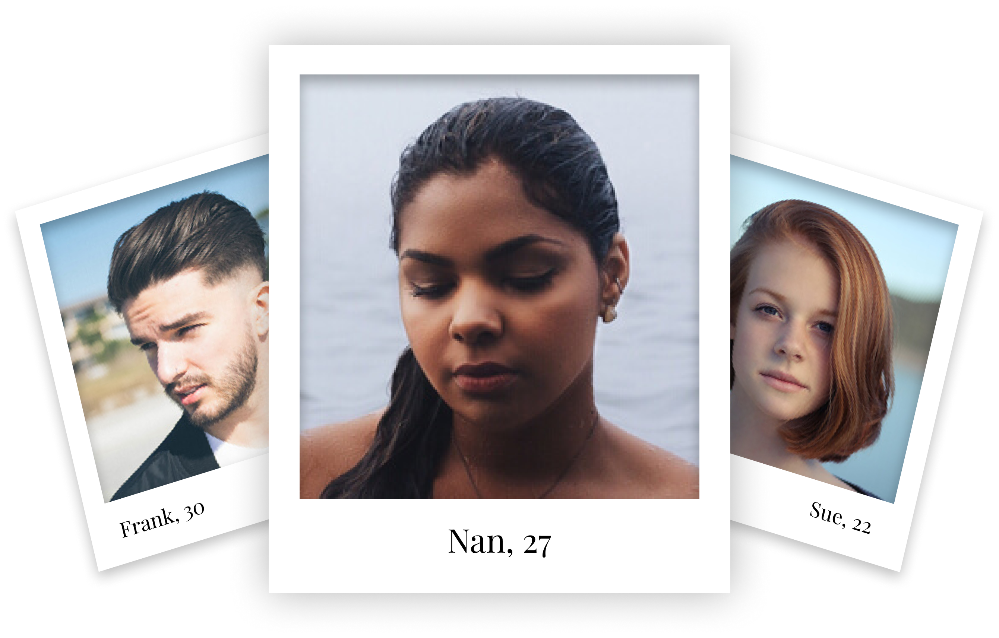
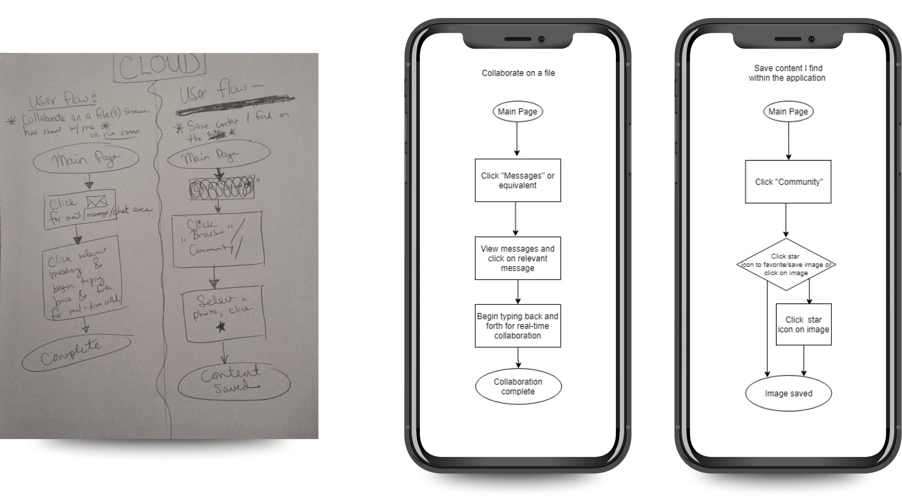
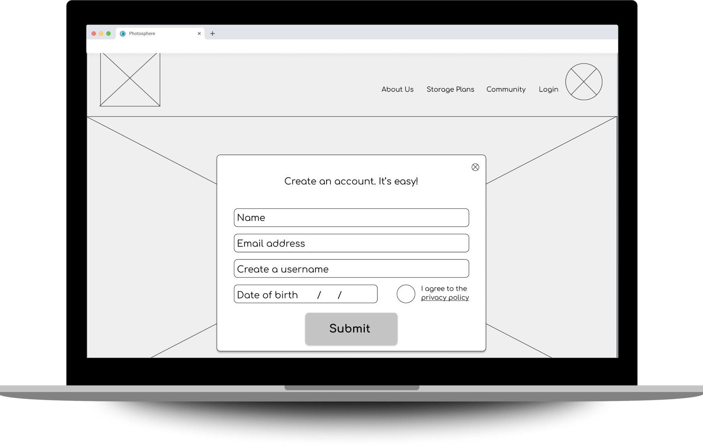
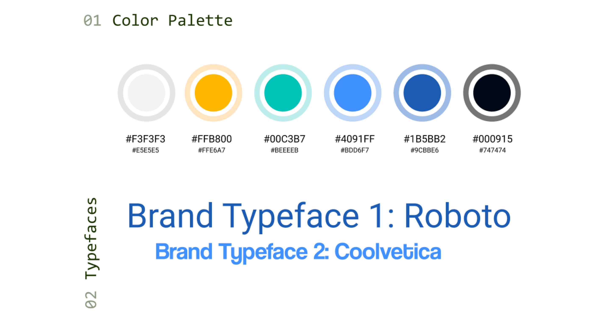
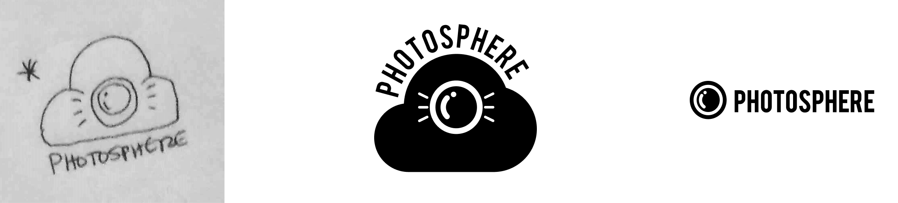
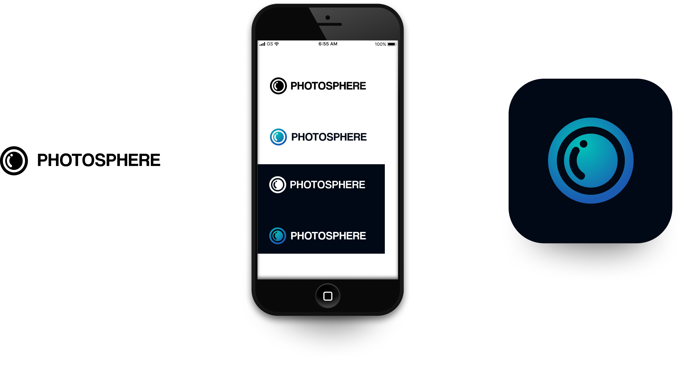
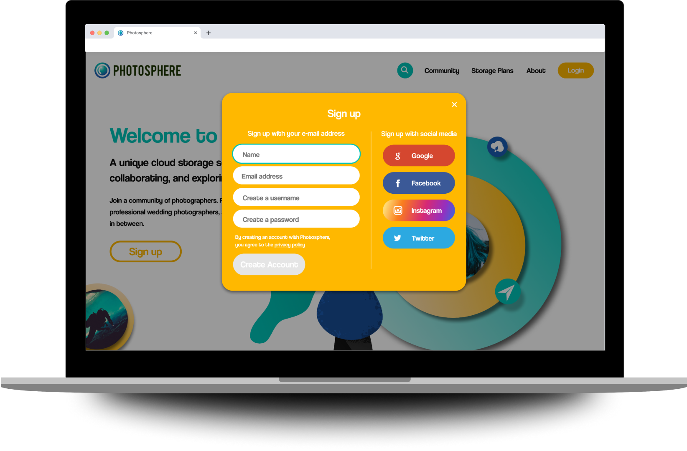
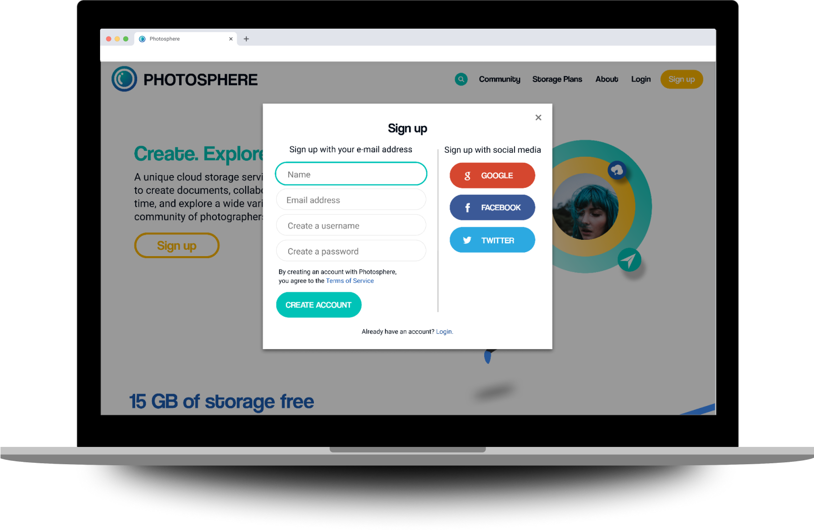

Unique desktop cloud storage system for photographs. Also contains the ability to create documents,
collaborate with other users in real time, and explore an online community of photographers of all varieties.
MY ROLES
SOLE UX | UI DESIGNER ON PROJECT
UX/UI Designer
Brand Developer
Visual Designer
Information Architect
Content Creator
PROBLEM
When it comes to cloud storage, many users feel it is not specialized enough for photograph storage alone. Additionally, the client requested the ability to upload, save, organize, create, share, and collaborate.
TOOLS USED
Paper and Pencil
Draw.io
Usability Hub
Maze
Figma
Invision
Illustrator
Photoshop
SOLUTION
The solution is Photosphere: a service specialized for the storage of photographs, which offers users the ability to upload, save, organize, create, share, and collaborate, as well as save content within the site.
COMPETITIVE ANALYSIS
FLICKR, SMUGMUG, GOOGLE DRIVE
The SWOT analysis helped me to determine these companies strengths, weaknesses, opportunities, and threats.
Some key takeaways that Photosphere could benefit from were:
SmugMug offers a free trial for two weeks, then no free options. Photosphere will offer a great free option.
SmugMug’s logo isn’t spectacularly memorable or strong. Photosphere will have a memorable, strong logo.
Flickr’s icons do not have words to go along, which can be confusing. Photosphere’s icons will have words by them.
Flickr autoloads when scrolling, so reaching the footer feels impossible. Photosphere’s interface will not feature this issue.
Google Drive has strong, simple, and bold branding. Photosphere will have strong, simple branding as well.
Google Drive is not specific to photography. Photosphere will be specific to photography.
If I were to do anything differently, I would analyze one last photography-specific site. I would also try to tap into
SmugMug’s portfolio-style presentation for professional photographers.
USER SURVEYS
THE USER COMES FIRST
Most used device
COMPUTER
Most used cloud service
GOOGLE DRIVE
Biggest frustration
SAVING & SHARING
Personal? Work? Both?
BOTH
With the help of my SWOT analysis results, I created a main user survey and a follow up survey to answer some main questions
that I had about users cloud storage needs. Users stated that they were using cloud storage for both personal and professional
purposes. In addition to that, they shared that their biggest frustrations were both sharing files and saving files.
USER PERSONAS
NARROW FOCUS. REMAIN USER CENTRIC.

Frank’s frustrations included multiple cloud services, but none specialized for photographs.
Sue was looking for a cloud service that offered real-time collaboration, and one that had more free options than SmugMug.
Nan wanted a cloud service that is easy to use and offered sharing/collaboration.
USER STORIES
FOCUSED ON MVP
With help of research and the three personas, I created user stories to determine which tasks would be vital for an MVP. It was
challenging to just focus on the high priority stories, but ranking them helped me to keep the scope of the project in mind.
ROLE
TASK
REASON
As a new cloud storage user
I want to create an account
so that I can use the cloud storage service.
As a cloud storage user
I want to upload a photo
so that I can keep it safe and organized.
As a cloud storage user
I want to share a photo
so that I can show my family/friends/coworkers.
As a cloud storage user
I want to view a file or folder someone has shared with me
so that I can see what my friends are up to.
As a cloud storage user
I want real-time collaboration on a file that has been shared
so that I can share my thoughts on their file.
As a cloud storage user
I want real-time collaboration on a file that I have shared
so I can get feedback on my photos/projects.
As a cloud storage user
I want to save content that I find within the application
so I can refer back to it for future inspiration.
As a cloud storage user
I want to organize content that I find within the applicaiton
so I can find things easily for future reference.
As a cloud storage user
I want to be able to create content (docs/notes)
so that I can write invoices for clients.
USER FLOWS
WHAT PAGES WOULD PHOTOSPHERE NEED?

User flows were created to show how users would realistically work their way through Photosphere. This helped me determine
what pages the site would need to have and would not need, and helped me to create a sitemap for Photosphere as well.
LO-FI PROTOTYPING
WE HAVE A CLICKABLE PROTOTYPE!

From the flows, I began to sketch concepts for lo-fi wireframes. After sketching, I digitized all wireframes and turned them into a
clickable prototype for first rounds of user testing. A huge problem that I encountered was that the navigation on my lo-fi
wireframes was (as you can see) far too large.
USER TESTING
ROUND ONE
I tested three users - some remotely and some in person. This enlightened me to some issues surrounding the “Upload”
function. After thorough testing and user feedback, I was able to make a plan for editing Photosphere further to relieve it of its
kinks. Some notes from the analysis include:
The organize aspect was lumped in with the upload option, which seemed a bit sticky and incomplete.
The question was asked afterward: How would one be able to move a photo between albums after uploading?
Users had positive comments on the logo and visuals.
BRAND IDENTITY
MINDMAPPING, SKETCHING, VECTORIZING

At this point I began mindmapping, and finally came up with a name that suited the service: Photosphere. I selected a color
palette that reflected the trustworthy, bright and sunny nature of the brand. And I began sketching a logo concept. After
sketching, I used Adobe Illustrator to digitize many concepts. Through preference testing I was able to iterate further, and users
helped Photosphere realize it’s perfect, final logo.
LOGO PROGRESSION
FROM THE SELECTED SKETCH TO THE FINAL LOGO


HI-FI MOCKUPS
CREATING THE ULTIMATE IN LOOK AND FUNCTION
I created high fidelity mockups to create an in depth, finessed version of Photosphere, for users to click through
and accomplish the tasks required to produce the MVP. All icons, illustrations, and assets (aside from photographs) were created by me.
This is something I would change in the future - it took a long time and I can utilize icon libraries next time for ease.
USER TESTING
ROUND TWO


I performed a second round of testing. Once again, I chose three users to test, and was glad to see that after thoroughly
observing users flow through Photosphere’s hifi clickable prototype, the issues were mostly resolved. However, I was still able to
receive vital feedback on the sign in user experience and interface to iterate one step further and smooth out Photosphere to be
the best MVP it could be before launch.
CONCLUSION
WOULD I HAVE DONE THINGS THE SAME?
This project was incredible to direct from concept to interactive, high fidelity prototype. A big takeaway from working on this is
that “Test early and often” is no joke. I would have started testing even earlier, and would have tested more. I learned that just
because I can create all icons and assets from scratch, doesn’t mean that I should. Time is a big factor. I also learned that there
is a resource online for almost anything. And that testing users is more than just listening to their words, but also reading their
body language and watching their process intensely.